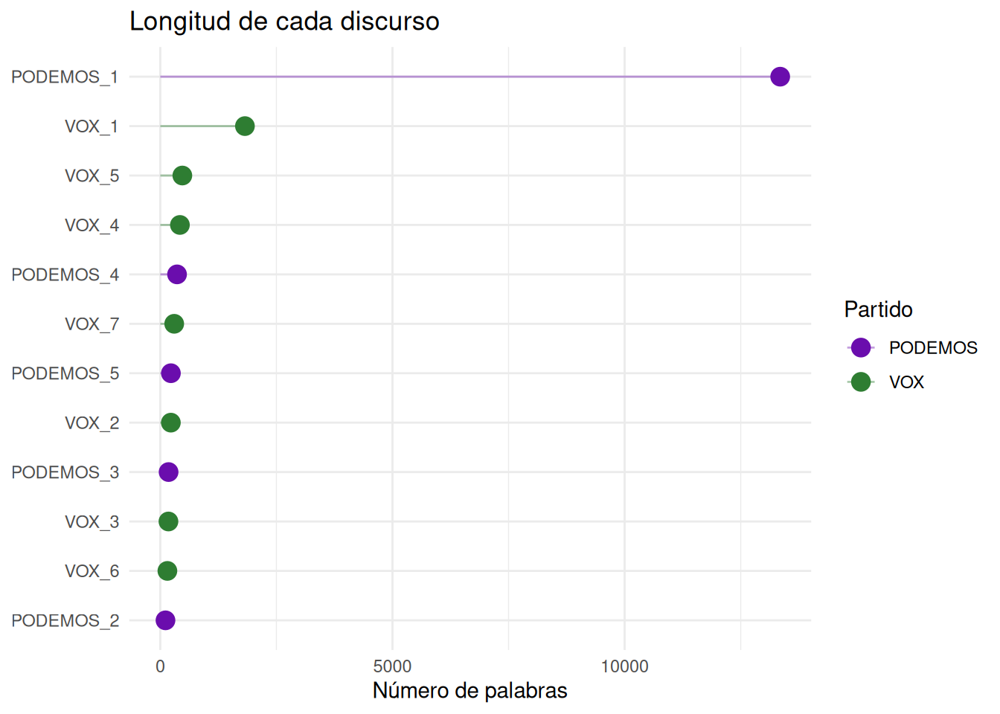
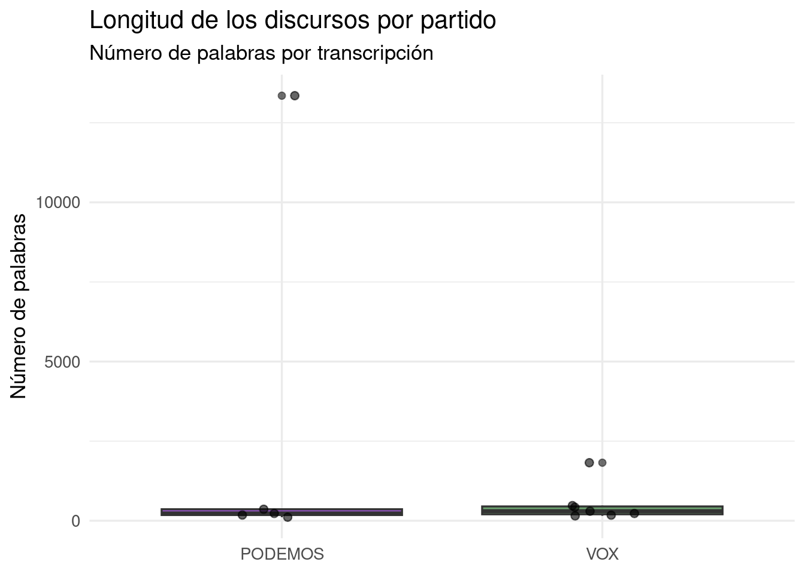
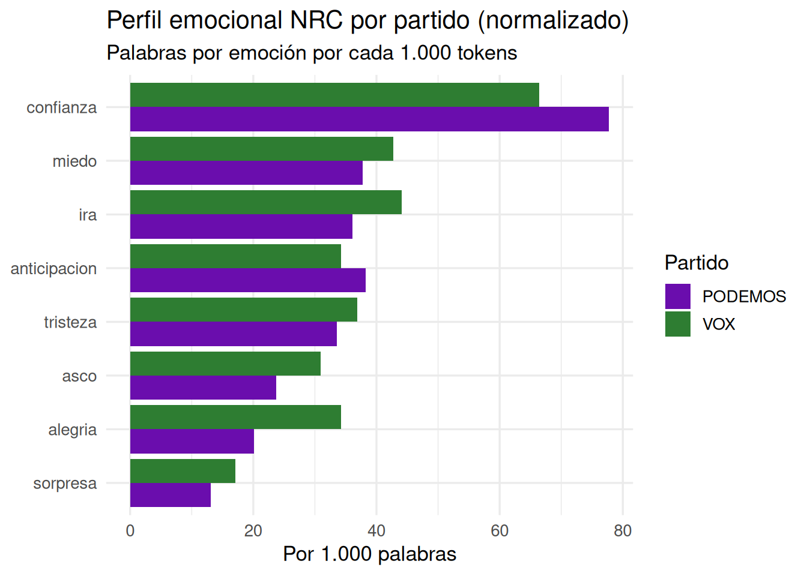

# Instalar — solo una vez
install.packages("dplyr")
install.packages(c("dplyr", "ggplot2", "tidytext"))
# Cargar — en cada sesión
library(dplyr)
# La diferencia clave:
# install.packages("dplyr") → instala el paquete en el disco (una vez)
# library(dplyr) → carga el paquete en memoria (cada sesión)Antes de empezar: instalación del entorno
Para seguir este curso necesitas tres herramientas instaladas en tu ordenador. Instálalas en este orden.
Paso 1 — Instalar R obligatorio
Descarga el instalador .exe desde la web oficial de CRAN y ejecútalo con las opciones por defecto:
👉 https://cran.r-project.org/bin/windows/base/
Paso 2 — Instalar RStudio Desktop obligatorio
👉 https://posit.co/download/rstudio-desktop/
⚠️ Instala RStudio después de R. RStudio detecta automáticamente la instalación de R al arrancar.
Paso 3 — Instalar Quarto opcional
Paso 1 — Instalar R obligatorio
Descarga el paquete .pkg desde CRAN. Elige la versión según tu chip:
- Apple Silicon (M1 / M2 / M3): archivo con
arm64 - Intel: archivo con
x86_64
👉 https://cran.r-project.org/bin/macosx/
Paso 2 — Instalar RStudio Desktop obligatorio
👉 https://posit.co/download/rstudio-desktop/
💡 Si macOS bloquea el instalador, ve a Ajustes del sistema → Privacidad y seguridad → “Abrir igualmente”.
Paso 3 — Instalar Quarto opcional
Paquetes en R: CRAN, GitHub y cómo usarlos
Qué es CRAN
CRAN (Comprehensive R Archive Network) es el repositorio oficial de paquetes de R. Actualmente alberga más de 20.000 paquetes revisados y mantenidos por la comunidad. Cuando ejecutas install.packages(), R descarga el paquete directamente desde CRAN.
Las Task Views agrupan paquetes por área temática — hay vistas para lingüística, ciencias sociales, análisis de texto y más:
Instalar y cargar paquetes
La instalación solo hace falta hacerla una vez por máquina. Cargar el paquete con library() hay que hacerlo en cada sesión.
Regla práctica: pon todos los
library()al principio de tu script para que cualquier persona que lo ejecute sepa desde el principio qué paquetes necesita.
Instalar desde GitHub
Algunos paquetes están en desarrollo y aún no han llegado a CRAN. Para instalarlos:
install.packages("remotes")
remotes::install_github("tidyverse/ggplot2")Actualizar paquetes
update.packages(ask = FALSE)Instalar los paquetes del curso
install.packages(c(
"tidyverse",
"tidytext",
"syuzhet",
"quanteda",
"quanteda.textstats",
"quanteda.textplots",
"udpipe"
))Cheatsheets: referencia rápida
| Paquete | Para qué sirve | Cheatsheet |
|---|---|---|
dplyr |
Manipulación de datos | descargar |
ggplot2 |
Visualización de datos | descargar |
tidyr |
Reorganización de datos | descargar |
readr |
Importación de datos | descargar |
stringr |
Manipulación de texto | descargar |
purrr |
Programación funcional | descargar |
tidytext |
Análisis de texto tidy | descargar |
lubridate |
Fechas y tiempos | descargar |
quanteda |
Lingüística de corpus | descargar |
Todas las cheatsheets oficiales: 👉 https://posit.co/resources/cheatsheets/
RMarkdown y Quarto: documentos reproducibles
Qué es RMarkdown
RMarkdown es un formato de documento que combina texto, código R y resultados en un único archivo .Rmd. Al compilarlo, R procesa el código y genera un documento HTML, PDF o Word con los resultados incrustados. Es el estándar para hacer análisis reproducibles y comunicables.
Quarto (.qmd) es el sucesor moderno de RMarkdown. Es más flexible, soporta Python y Julia además de R, y es el formato que usa este curso.
La estructura de cualquier documento tiene tres partes:
---
title: "Mi análisis"
author: "Tu nombre"
format: html
---
Aquí escribes texto normal en **Markdown**.
```{r}
# Aquí escribes código R
mean(c(1, 2, 3, 4, 5))
```Crear un nuevo documento
En RStudio: File → New File → R Markdown...
Para compilar: botón Knit o Ctrl+Shift+K / Cmd+Shift+K.
En RStudio o Positron: File → New File → Quarto Document...
Para compilar: botón Render o Ctrl+Shift+K / Cmd+Shift+K.
Opciones de chunk
Las opciones de chunk controlan cómo se muestra el código y los resultados:
| Opción | Valores | Efecto |
|---|---|---|
echo |
true / false | Mostrar u ocultar el código |
eval |
true / false | Ejecutar o no el código |
warning |
true / false | Mostrar u ocultar avisos |
message |
true / false | Mostrar u ocultar mensajes |
fig-width |
número | Ancho del gráfico en pulgadas |
fig-height |
número | Alto del gráfico en pulgadas |
Atajos de teclado esenciales
| Acción | Atajo |
|---|---|
| Ejecutar línea o selección | Ctrl + Enter |
| Ejecutar todo el script | Ctrl + Shift + Enter |
Insertar <- |
Alt + - |
Insertar pipe \|> |
Ctrl + Shift + M |
| Insertar nuevo chunk | Ctrl + Alt + I |
| Compilar (Knit / Render) | Ctrl + Shift + K |
| Comentar / descomentar | Ctrl + Shift + C |
| Buscar y reemplazar | Ctrl + H |
| Autocompletar | Tab |
| Limpiar la consola | Ctrl + L |
| Guardar archivo | Ctrl + S |
| Acción | Atajo |
|---|---|
| Ejecutar línea o selección | Cmd + Enter |
| Ejecutar todo el script | Cmd + Shift + Enter |
Insertar <- |
Option + - |
Insertar pipe \|> |
Cmd + Shift + M |
| Insertar nuevo chunk | Cmd + Option + I |
| Compilar (Knit / Render) | Cmd + Shift + K |
| Comentar / descomentar | Cmd + Shift + C |
| Buscar y reemplazar | Cmd + H |
| Autocompletar | Tab |
| Limpiar la consola | Ctrl + L |
| Guardar archivo | Cmd + S |
Los tres más importantes para empezar:
Alt + -/Option + -— inserta<-de un golpe. Lo usarás constantemente.Ctrl/Cmd + Enter— ejecuta la línea donde está el cursor sin seleccionar nada.Ctrl/Cmd + Alt/Option + I— inserta un chunk nuevo en RMarkdown o Quarto.
Parte I: R básico
Qué es R
R es un lenguaje de programación diseñado para el análisis de datos y la estadística. A diferencia de Excel, R es reproducible — cualquier análisis puede replicarse exactamente ejecutando el mismo código. Es gratuito y tiene una comunidad enorme en humanidades y ciencias sociales.
R y RStudio
- R es el motor: el lenguaje que interpreta y ejecuta el código.
- RStudio es el entorno: la interfaz desde la que trabajamos.
| Panel | Ubicación | Para qué sirve |
|---|---|---|
| Script | Arriba izquierda | Escribir y guardar código |
| Console | Abajo izquierda | Ejecutar código y ver resultados |
| Environment | Arriba derecha | Ver los objetos creados |
| Files / Plots | Abajo derecha | Archivos, gráficos, paquetes |
R como calculadora
2 + 3[1] 510 / 4[1] 2.52 ^ 8[1] 256sqrt(144)[1] 12Objetos y asignación
mi_nombre <- "Ana García"
edad <- 23
aprobado <- TRUE
mi_nombre[1] "Ana García"edad + 10[1] 33Tipos de datos
x <- 3.14
class(x)[1] "numeric"palabra <- "lingüística"
class(palabra)[1] "character"es_verbo <- FALSE
class(es_verbo)[1] "logical"Vectores
longitudes <- c(3, 5, 2, 8, 4, 6, 3, 7)
mean(longitudes)[1] 4.75max(longitudes)[1] 8length(longitudes)[1] 8palabras <- c("casa", "árbol", "luz", "universidad")
nchar(palabras)[1] 4 5 3 11Ejercicio 1
- Crea un objeto
autorcon tu nombre completo. - Crea un vector
silabascon el número de sílabas de cinco palabras que elijas. - Calcula la media de sílabas con
mean(). - ¿Qué devuelve
class(silabas)?
Parte II: Tidyverse y su filosofía
Qué es el tidyverse
El tidyverse es una colección de paquetes diseñados para trabajar juntos: datos ordenados (tidy), código legible y operaciones encadenadas con el pipe |>.
library(tidyverse)| Verbo | Qué hace |
|---|---|
select() |
Seleccionar columnas |
filter() |
Filtrar filas por condición |
mutate() |
Crear o modificar columnas |
summarise() |
Calcular resúmenes |
arrange() |
Ordenar filas |
Tibbles y el pipe
corpus_mini <- tibble(
palabra = c("casa", "árbol", "correr", "azul", "rápido"),
categoria = c("sustantivo", "sustantivo", "verbo", "adjetivo", "adjetivo"),
silabas = c(2, 2, 3, 2, 3),
frecuencia = c(8420, 3105, 5622, 4890, 2310)
)
corpus_mini# A tibble: 5 × 4
palabra categoria silabas frecuencia
<chr> <chr> <dbl> <dbl>
1 casa sustantivo 2 8420
2 árbol sustantivo 2 3105
3 correr verbo 3 5622
4 azul adjetivo 2 4890
5 rápido adjetivo 3 2310# Sin pipe
arrange(filter(corpus_mini, silabas > 2), frecuencia)# A tibble: 2 × 4
palabra categoria silabas frecuencia
<chr> <chr> <dbl> <dbl>
1 rápido adjetivo 3 2310
2 correr verbo 3 5622# Con pipe — mucho más legible
corpus_mini |>
filter(silabas > 2) |>
arrange(frecuencia)# A tibble: 2 × 4
palabra categoria silabas frecuencia
<chr> <chr> <dbl> <dbl>
1 rápido adjetivo 3 2310
2 correr verbo 3 5622Verbos principales
corpus_mini |> select(palabra, frecuencia)# A tibble: 5 × 2
palabra frecuencia
<chr> <dbl>
1 casa 8420
2 árbol 3105
3 correr 5622
4 azul 4890
5 rápido 2310corpus_mini |> filter(categoria == "sustantivo")# A tibble: 2 × 4
palabra categoria silabas frecuencia
<chr> <chr> <dbl> <dbl>
1 casa sustantivo 2 8420
2 árbol sustantivo 2 3105corpus_mini |> filter(frecuencia > 5000)# A tibble: 2 × 4
palabra categoria silabas frecuencia
<chr> <chr> <dbl> <dbl>
1 casa sustantivo 2 8420
2 correr verbo 3 5622corpus_mini |>
mutate(n_chars = nchar(palabra)) |>
select(palabra, silabas, n_chars)# A tibble: 5 × 3
palabra silabas n_chars
<chr> <dbl> <int>
1 casa 2 4
2 árbol 2 5
3 correr 3 6
4 azul 2 4
5 rápido 3 6corpus_mini |>
group_by(categoria) |>
summarise(
n = n(),
media_freq = round(mean(frecuencia), 0),
media_sil = round(mean(silabas), 1)
)# A tibble: 3 × 4
categoria n media_freq media_sil
<chr> <int> <dbl> <dbl>
1 adjetivo 2 3600 2.5
2 sustantivo 2 5762 2
3 verbo 1 5622 3 corpus_mini |> arrange(desc(frecuencia))# A tibble: 5 × 4
palabra categoria silabas frecuencia
<chr> <chr> <dbl> <dbl>
1 casa sustantivo 2 8420
2 correr verbo 3 5622
3 azul adjetivo 2 4890
4 árbol sustantivo 2 3105
5 rápido adjetivo 3 2310Ejercicio 2
- Filtra solo las palabras con 3 sílabas.
- Crea una variable
freq_por_silaba = frecuencia / silabas. ¿Qué palabra tiene el valor más alto? - Calcula la frecuencia media por número de sílabas con
group_by()ysummarise(). - Ordena el corpus por longitud de palabra de mayor a menor.
Parte III: Carga del corpus real
El corpus: discursos políticos sobre inmigración
Trabajamos con 12 transcripciones reales de discursos de VOX (7) y Podemos (5) sobre inmigración en España. Los textos están alojados en GitHub y se cargan directamente desde R.
library(readr)
library(stringr)
library(purrr)
base_url <- "https://raw.githubusercontent.com/AritzUMA/runav/main/discursos/"
archivos <- c(
"VOX_1.txt", "VOX_2.txt", "VOX_3.txt", "VOX_4.txt",
"VOX_5.txt", "VOX_6.txt", "VOX_7.txt",
"PODEMOS_1.txt", "PODEMOS_2.txt", "PODEMOS_3.txt",
"PODEMOS_4.txt", "PODEMOS_5.txt"
)
leer_discurso <- function(archivo) {
url <- paste0(base_url, archivo)
texto <- read_lines(url) |> paste(collapse = " ")
partido <- str_extract(archivo, "^[A-Z]+")
id <- str_remove(archivo, "\\.txt$")
tibble(
id = id,
partido = partido,
texto = texto,
n_palabras = str_count(texto, "\\S+"),
n_chars = nchar(texto)
)
}
corpus <- map(archivos, leer_discurso) |> list_rbind()
glimpse(corpus)Rows: 12
Columns: 5
$ id <chr> "VOX_1", "VOX_2", "VOX_3", "VOX_4", "VOX_5", "VOX_6", "VOX_…
$ partido <chr> "VOX", "VOX", "VOX", "VOX", "VOX", "VOX", "VOX", "PODEMOS",…
$ texto <chr> "Este lado está con nosotros, Rosío Bonasterio, analista po…
$ n_palabras <int> 1823, 228, 176, 423, 475, 153, 300, 13350, 112, 179, 361, 2…
$ n_chars <int> 10474, 1383, 1047, 2540, 2733, 878, 1690, 75955, 670, 1019,…Primera exploración
corpus |> count(partido)# A tibble: 2 × 2
partido n
<chr> <int>
1 PODEMOS 5
2 VOX 7corpus |>
group_by(partido) |>
summarise(
n_discursos = n(),
media_palabras = round(mean(n_palabras), 0),
total_palabras = sum(n_palabras)
)# A tibble: 2 × 4
partido n_discursos media_palabras total_palabras
<chr> <int> <dbl> <int>
1 PODEMOS 5 2846 14231
2 VOX 7 511 3578# Lollipop: longitud de cada discurso
ggplot(corpus, aes(x = n_palabras, y = reorder(id, n_palabras), color = partido)) +
geom_point(size = 4) +
geom_segment(aes(x = 0, xend = n_palabras,
y = reorder(id, n_palabras),
yend = reorder(id, n_palabras)),
linewidth = 0.5, alpha = 0.4) +
scale_color_manual(values = c("PODEMOS" = "#6a0dad", "VOX" = "#2e7d32")) +
labs(
title = "Longitud de cada discurso",
x = "Número de palabras",
y = NULL,
color = "Partido"
) +
theme_minimal()
Ejercicio 3
- ¿Qué partido tiene más palabras en total?
- Filtra los discursos con más de 400 palabras. ¿De qué partido son?
- Crea una variable
long_media_palabra = n_chars / n_palabras. ¿Qué partido usa palabras más largas?
Parte IV: Análisis de texto con tidytext
Tokenización
library(tidytext)
tokens <- corpus |>
select(id, partido, texto) |>
unnest_tokens(palabra, texto)
tokens# A tibble: 17,829 × 3
id partido palabra
<chr> <chr> <chr>
1 VOX_1 VOX este
2 VOX_1 VOX lado
3 VOX_1 VOX está
4 VOX_1 VOX con
5 VOX_1 VOX nosotros
6 VOX_1 VOX rosío
7 VOX_1 VOX bonasterio
8 VOX_1 VOX analista
9 VOX_1 VOX político
10 VOX_1 VOX bienvenido
# ℹ 17,819 more rowstokens |> count(partido)# A tibble: 2 × 2
partido n
<chr> <int>
1 PODEMOS 14249
2 VOX 3580Frecuencias brutas
tokens |>
count(partido, palabra, sort = TRUE) |>
group_by(partido) |>
slice_max(n, n = 10)# A tibble: 20 × 3
# Groups: partido [2]
partido palabra n
<chr> <chr> <int>
1 PODEMOS que 829
2 PODEMOS de 647
3 PODEMOS la 388
4 PODEMOS y 379
5 PODEMOS a 332
6 PODEMOS en 312
7 PODEMOS es 275
8 PODEMOS el 248
9 PODEMOS no 244
10 PODEMOS un 226
11 VOX que 211
12 VOX de 170
13 VOX a 137
14 VOX y 111
15 VOX los 95
16 VOX en 74
17 VOX el 67
18 VOX la 65
19 VOX es 56
20 VOX no 51Stopwords
stop_es <- get_stopwords(language = "es")
stop_custom <- tibble(word = c(
"si", "ser", "asi", "ahi", "aqui", "tan", "tal",
"hay", "ver", "van", "vez", "anos", "ano", "hoy",
"dia", "bueno", "claro", "entonces", "pues", "bien",
"solo", "puede", "hacer", "decir", "creo", "sí"
))
stop_todas <- bind_rows(stop_es, stop_custom)Frecuencias limpias
tokens_limpios <- tokens |>
filter(!palabra %in% stop_todas$word) |>
filter(nchar(palabra) > 2)
tokens_limpios |>
count(partido, palabra, sort = TRUE) |>
group_by(partido) |>
slice_max(n, n = 15)# A tibble: 32 × 3
# Groups: partido [2]
partido palabra n
<chr> <chr> <int>
1 PODEMOS vale 48
2 PODEMOS podemos 43
3 PODEMOS cómo 32
4 PODEMOS gente 32
5 PODEMOS bulos 29
6 PODEMOS partido 28
7 PODEMOS así 27
8 PODEMOS hace 27
9 PODEMOS hecho 27
10 PODEMOS ahora 26
# ℹ 22 more rowsTF-IDF: palabras distintivas
tfidf <- tokens_limpios |>
count(partido, palabra) |>
bind_tf_idf(palabra, partido, n) |>
group_by(partido) |>
slice_max(tf_idf, n = 15) |>
arrange(partido, desc(tf_idf))
tfidf# A tibble: 42 × 6
# Groups: partido [2]
partido palabra n tf idf tf_idf
<chr> <chr> <int> <dbl> <dbl> <dbl>
1 PODEMOS vale 48 0.00813 0.693 0.00564
2 PODEMOS bulos 29 0.00491 0.693 0.00341
3 PODEMOS bulo 21 0.00356 0.693 0.00247
4 PODEMOS fuente 21 0.00356 0.693 0.00247
5 PODEMOS muchas 20 0.00339 0.693 0.00235
6 PODEMOS derecha 18 0.00305 0.693 0.00211
7 PODEMOS judicial 18 0.00305 0.693 0.00211
8 PODEMOS poder 17 0.00288 0.693 0.00200
9 PODEMOS pueblo 16 0.00271 0.693 0.00188
10 PODEMOS red 16 0.00271 0.693 0.00188
# ℹ 32 more rowsEjercicio 4
- ¿Qué palabras son más distintivas de VOX según el TF-IDF? ¿Y de Podemos?
- ¿Coincide con lo que esperabas del discurso político sobre inmigración?
- Añade 5 palabras más a
stop_customy regenera las frecuencias limpias. - Reto: Calcula el TF-IDF a nivel de discurso individual (
id). ¿Qué discurso de VOX es más diferente de los demás?
Análisis emocional con NRC
El NRC Emotion Lexicon es un recurso léxico que asocia palabras a 8 emociones básicas (ira, anticipación, asco, miedo, alegría, tristeza, sorpresa, confianza) y 2 polaridades (positivo/negativo). Fue desarrollado por Saif Mohammad y Peter Turney y está disponible en múltiples idiomas, incluido el español. Lo cargamos a través del paquete syuzhet.
Para comparar entre partidos con distinto volumen de texto, normalizamos por el total de tokens de cada partido: en lugar de contar cuántas palabras tienen carga emocional, calculamos cuántas hay por cada 1.000 tokens. Así la comparación es justa independientemente del tamaño del corpus de cada partido.
Paso 1 — Cargar syuzhet y comprobar el léxico
library(syuzhet)
# Probamos el léxico con cinco palabras del corpus
# Cada columna es una emoción o polaridad
# El valor es 1 si la palabra tiene esa asociación, 0 si no
get_nrc_sentiment(
c("migrante", "ilegal", "acogida", "expulsión", "derechos"),
language = "spanish"
) anger anticipation disgust fear joy sadness surprise trust negative positive
1 0 0 0 0 0 0 0 0 0 0
2 3 0 3 2 0 3 0 0 3 0
3 0 0 0 0 0 0 0 0 0 0
4 0 0 0 0 0 0 0 0 0 0
5 0 0 0 0 0 0 0 0 0 0Paso 2 — Puntuar todos los tokens limpios
# Extraemos todas las palabras únicas del corpus limpio
# para no repetir llamadas al léxico con la misma palabra
palabras_unicas <- unique(tokens_limpios$palabra)
# get_nrc_sentiment() devuelve una fila por palabra
# con una puntuación (0 o 1) para cada emoción
nrc_scores <- get_nrc_sentiment(palabras_unicas, language = "spanish")
nrc_scores$palabra <- palabras_unicas # añadimos la columna de texto para poder hacer el join
# Unimos las puntuaciones NRC al dataframe de tokens
# Ahora cada token tiene asociada su carga emocional
tokens_nrc <- tokens_limpios |>
left_join(nrc_scores, by = "palabra")Paso 3 — Calcular el total de tokens por partido (denominador)
# Necesitamos saber cuántos tokens tiene cada partido
# para poder normalizar las frecuencias emocionales
total_tokens <- tokens_limpios |>
count(partido, name = "total")
total_tokens# A tibble: 2 × 2
partido total
<chr> <int>
1 PODEMOS 5902
2 VOX 1520Paso 4 — Agregar emociones y normalizar
# Sumamos las puntuaciones de cada emoción por partido
# Luego dividimos por el total de tokens y multiplicamos por 1.000
# El resultado es "palabras con esa emoción por cada 1.000 tokens"
emociones <- tokens_nrc |>
group_by(partido) |>
summarise(
ira = sum(anger), # anger en el léxico NRC
anticipacion = sum(anticipation),
asco = sum(disgust),
miedo = sum(fear),
alegria = sum(joy),
tristeza = sum(sadness),
sorpresa = sum(surprise),
confianza = sum(trust),
negativo = sum(negative),
positivo = sum(positive)
) |>
left_join(total_tokens, by = "partido") |>
# across() aplica la misma operación a todas las columnas de ira a positivo
mutate(across(ira:positivo, ~ round(.x / total * 1000, 2))) |>
select(-total) # eliminamos la columna auxiliar
emociones# A tibble: 2 × 11
partido ira anticipacion asco miedo alegria tristeza sorpresa confianza
<chr> <dbl> <dbl> <dbl> <dbl> <dbl> <dbl> <dbl> <dbl>
1 PODEMOS 36.1 38.3 23.7 37.8 20.2 33.6 13.0 77.8
2 VOX 44.1 34.2 30.9 42.8 34.2 36.8 17.1 66.4
# ℹ 2 more variables: negativo <dbl>, positivo <dbl>Paso 5 — Polaridad relativa
# Calculamos qué proporción del vocabulario emocional es positiva o negativa
# pct_neg + pct_pos = 100 para cada partido
emociones |>
mutate(
total_pol = negativo + positivo,
pct_neg = round(negativo / total_pol * 100, 1),
pct_pos = round(positivo / total_pol * 100, 1)
) |>
select(partido, negativo, positivo, pct_neg, pct_pos)# A tibble: 2 × 5
partido negativo positivo pct_neg pct_pos
<chr> <dbl> <dbl> <dbl> <dbl>
1 PODEMOS 74.2 97.4 43.2 56.8
2 VOX 84.9 99.3 46.1 53.9Paso 6 — Visualización
# pivot_longer() transforma el dataframe de formato ancho a largo:
# en lugar de una columna por emoción, tenemos una fila por emoción
# Esto es lo que necesita ggplot2 para hacer el gráfico facetado
grafico_nrc <- emociones |>
pivot_longer(-partido, names_to = "emocion", values_to = "por_mil") |>
filter(!emocion %in% c("negativo", "positivo")) |> # excluimos polaridad
ggplot(aes(x = reorder(emocion, por_mil), y = por_mil, fill = partido)) +
geom_col(position = "dodge") + # barras agrupadas, una por partido
coord_flip() + # giramos para leer mejor las etiquetas
scale_fill_manual(values = c("PODEMOS" = "#6a0dad", "VOX" = "#2e7d32")) +
labs(
title = "Perfil emocional NRC por partido (normalizado)",
subtitle = "Palabras por emoción por cada 1.000 tokens",
x = NULL,
y = "Por 1.000 palabras",
fill = "Partido"
) +
theme_minimal(base_size = 13)
grafico_nrc
Paso 7 — Exportar el gráfico en alta resolución
# ggsave() guarda el último gráfico generado (o el objeto especificado)
# dpi = 300 es el estándar para publicación académica
# width y height en pulgadas; 7x5 es un tamaño habitual para artículos
ggsave(
filename = "perfil_emocional_nrc.png",
plot = grafico_nrc,
width = 8,
height = 5,
dpi = 300,
bg = "white" # fondo blanco explícito (evita fondos transparentes)
)El archivo
perfil_emocional_nrc.pngse guarda en el directorio de trabajo. Puedes comprobarlo congetwd(). Para otros formatos académicos usafilename = "grafico.pdf"(vectorial, sin pérdida de calidad) ofilename = "grafico.tiff"(requerido por algunas revistas).
Palabras clave sobre inmigración
terminos_clave <- c(
"migrantes", "inmigrantes", "ilegales", "regularizar",
"fronteras", "expulsion", "acogida", "derechos",
"menores", "deportacion"
)
tokens |>
filter(palabra %in% terminos_clave) |>
count(partido, palabra, sort = TRUE)# A tibble: 12 × 3
partido palabra n
<chr> <chr> <int>
1 VOX inmigrantes 9
2 VOX ilegales 8
3 PODEMOS derechos 5
4 VOX fronteras 5
5 PODEMOS migrantes 4
6 PODEMOS acogida 1
7 PODEMOS ilegales 1
8 PODEMOS inmigrantes 1
9 PODEMOS menores 1
10 PODEMOS regularizar 1
11 VOX derechos 1
12 VOX regularizar 1Ejercicio 5
- ¿Qué partido usa más términos con carga emocional negativa según el NRC normalizado?
- Añade más términos al vector
terminos_clave. ¿Cambia el patrón entre partidos? - Reto: Calcula el perfil emocional NRC por discurso individual. ¿Hay variación dentro del mismo partido?
Parte V: Análisis de corpus con quanteda
Qué es quanteda
quanteda es el paquete de referencia para lingüística de corpus en R.
library(quanteda)
library(quanteda.textstats)
library(quanteda.textplots)Crear un corpus quanteda
corpus_q <- corpus(corpus, text_field = "texto", docid_field = "id")
summary(corpus_q)Corpus consisting of 12 documents, showing 12 documents:
Text Types Tokens Sentences partido n_palabras n_chars
VOX_1 620 2155 108 VOX 1823 10474
VOX_2 131 261 11 VOX 228 1383
VOX_3 129 198 8 VOX 176 1047
VOX_4 209 461 15 VOX 423 2540
VOX_5 223 520 21 VOX 475 2733
VOX_6 91 162 6 VOX 153 878
VOX_7 158 339 17 VOX 300 1690
PODEMOS_1 2795 15528 676 PODEMOS 13350 75955
PODEMOS_2 81 119 5 PODEMOS 112 670
PODEMOS_3 111 190 5 PODEMOS 179 1019
PODEMOS_4 175 394 18 PODEMOS 361 1943
PODEMOS_5 134 282 25 PODEMOS 229 1340Tokens y DFM
toks <- tokens(corpus_q,
remove_punct = TRUE,
remove_numbers = TRUE,
remove_symbols = TRUE) |>
tokens_tolower() |>
tokens_remove(stopwords("es")) |>
tokens_remove(stop_custom$word)
dfm_corpus <- dfm(toks)
dfm_corpusDocument-feature matrix of: 12 documents, 3,074 features (89.93% sparse) and 3 docvars.
features
docs lado rosío bonasterio analista político bienvenido buenos días allá
VOX_1 1 2 2 1 2 1 1 1 1
VOX_2 0 0 0 0 0 0 0 0 0
VOX_3 0 0 0 0 0 0 0 1 0
VOX_4 0 0 0 0 0 0 0 0 0
VOX_5 0 0 0 0 0 0 0 0 0
VOX_6 0 0 0 0 0 0 0 0 0
features
docs cifra
VOX_1 1
VOX_2 0
VOX_3 0
VOX_4 0
VOX_5 0
VOX_6 0
[ reached max_ndoc ... 6 more documents, reached max_nfeat ... 3,064 more features ]Frecuencias globales
topfeatures(dfm_corpus, n = 20) vale podemos aquí gente ahora hecho hace cómo
48 46 37 36 35 34 34 33
así va bulos partido españa años política vamos
29 29 29 28 27 26 26 26
verdad además caso medios
25 25 25 25 dfm_partido <- dfm_group(dfm_corpus, groups = corpus_q$partido)
topfeatures(dfm_partido, n = 15) vale podemos aquí gente ahora hecho hace cómo
48 46 37 36 35 34 34 33
así va bulos partido españa años política
29 29 29 28 27 26 26 KWIC — palabras en contexto
kwic(toks, pattern = "inmigrantes", window = 5)Keyword-in-context with 10 matches.
[VOX_2, 40] pelea usted matemáticas convencido extranjeros |
[VOX_2, 57] cuanto sabes usted tremendamente injusto |
[VOX_2, 64] aquí manera legal tremendamente injusto |
[VOX_2, 70] hecho cola cuelen tremendamente injusto |
[VOX_3, 1] |
[VOX_4, 128] violentando leyes ilegalmente país discriminación |
[VOX_5, 57] millones euros cinco meses alojar |
[VOX_6, 56] mafias cómplices procedan repatriación inmediata |
[VOX_6, 60] inmediata inmigrantes ilegales deportación inmediata |
[PODEMOS_1, 284] china militar mundo diciendo springfield |
inmigrantes | trabajan contribuyen parte sociedad primeros
inmigrantes | entrado aquí manera legal tremendamente
inmigrantes | hecho cola cuelen tremendamente injusto
inmigrantes | trabajan esfuerzan cotizan contribuyen den
inmigrantes | ilegales hace días metros costa
inmigrantes | llegan legalmente amenaza seguridad españoles
inmigrantes | ilegales hoteles toda españa usted
inmigrantes | ilegales deportación inmediata inmigrantes ilegales
inmigrantes | ilegales cometido vitos patria subtítulos
inmigrantes | comen perros comen perros comen kwic(toks, pattern = "ilegales", window = 5)Keyword-in-context with 9 matches.
[VOX_3, 2] inmigrantes |
[VOX_5, 24] usted destina millones euros alimentación |
[VOX_5, 35] millones euros comunidades autónomas atiendan |
[VOX_5, 47] acogido millones euros pagar vuelos |
[VOX_5, 58] euros cinco meses alojar inmigrantes |
[VOX_5, 70] euros españoles sobran españoles atender |
[VOX_6, 57] cómplices procedan repatriación inmediata inmigrantes |
[VOX_6, 61] inmigrantes ilegales deportación inmediata inmigrantes |
[PODEMOS_2, 45] seguiremos insistiendo ello seres humanos |
ilegales | hace días metros costa marroquí
ilegales | llegan canarias año usted destina
ilegales | sabemos miles ofrece euros año
ilegales | ustedes traen península gasta millones
ilegales | hoteles toda españa usted empleado
ilegales | entraron españa año sepamos ustedes
ilegales | deportación inmediata inmigrantes ilegales cometido
ilegales | cometido vitos patria subtítulos comunidad
ilegales | españa debe regularizar menos millón kwic(toks, pattern = "migr*", window = 4)Keyword-in-context with 8 matches.
[VOX_1, 616] establecer parámetros lugares mismo | migración |
[VOX_4, 55] box saber infame política | migratoria |
[PODEMOS_1, 312] planeta mintiendo descaradamente personas | migrantes |
[PODEMOS_2, 9] definitiva ilp regularización personas | migrantes |
[PODEMOS_2, 37] carta naturaleza todas personas | migrantes |
[PODEMOS_2, 51] debe regularizar menos millón | migrantes |
[PODEMOS_3, 51] país niño niña adolescente | migrante |
[PODEMOS_3, 64] protección niños niñas políticas | migración |
delincuencia momento hablando tema
país dirija mafias gobierno
unidos nuevo nivel luego
dotar ello mismos derechos
volvemos repetir seguiremos insistiendo
palabras pedro sánchez auténtica
acompañado niño niña expuesto
deben principio rector cualquier Keyness y similaridad
keyness <- textstat_keyness(dfm_corpus, target = corpus_q$partido == "VOX")
head(keyness, 20) feature chi2 p n_target n_reference
1 españoles 62.21455 3.108624e-15 17 0
2 ustedes 56.13039 6.783463e-14 18 2
3 trump 49.14858 2.372880e-12 15 1
4 usted 41.37243 1.258196e-10 13 1
5 obama 26.77660 2.283859e-07 8 0
6 seguridad 26.77660 2.283859e-07 8 0
7 inmigrantes 25.98212 3.445948e-07 9 1
8 salvador 22.86062 1.741843e-06 7 0
9 ilegales 22.19246 2.466400e-06 8 1
10 inmigración 22.19246 2.466400e-06 8 1
11 paro 18.95491 1.338445e-05 6 0
12 políticas 15.66234 7.571701e-05 8 3
13 aportar 15.06500 1.038717e-04 5 0
14 cubanos 15.06500 1.038717e-04 5 0
15 daca 15.06500 1.038717e-04 5 0
16 fronteras 15.06500 1.038717e-04 5 0
17 mil 15.06500 1.038717e-04 5 0
18 prosperar 15.06500 1.038717e-04 5 0
19 recibir 15.06500 1.038717e-04 5 0
20 ilegal 14.74899 1.228131e-04 6 1similitud <- textstat_simil(dfm_corpus, method = "cosine")
as.data.frame(similitud) |> arrange(desc(cosine)) |> head(10) document1 document2 cosine
1 VOX_1 PODEMOS_1 0.3300817
2 VOX_5 VOX_7 0.3294230
3 VOX_4 VOX_5 0.2759068
4 PODEMOS_1 PODEMOS_5 0.2507619
5 VOX_5 VOX_6 0.2447825
6 PODEMOS_1 PODEMOS_4 0.1873281
7 VOX_5 PODEMOS_1 0.1477572
8 VOX_4 PODEMOS_1 0.1452760
9 VOX_1 PODEMOS_4 0.1446376
10 VOX_6 VOX_7 0.1378207Ejercicio 6
- Usa
kwic()para buscar “fronteras”. ¿En qué contextos aparece en VOX y en Podemos? - Busca con comodín
"ilegal*". ¿Qué formas distintas aparecen? - Interpreta el keyness: ¿qué palabras son más características de Podemos?
- Reto: Crea una DFM solo con los discursos de VOX. ¿Coincide con el TF-IDF?
Parte VI: Anotación morfosintáctica con udpipe
Qué es udpipe
udpipe anota texto en español automáticamente: categoría gramatical, lema y dependencias sintácticas.
library(udpipe)
udpipe_download_model(language = "spanish")
modelo <- udpipe_load_model("spanish-gsd-ud-2.5-191206.udpipe")Anotar y explorar
texto_vox <- corpus |> filter(id == "VOX_1") |> pull(texto)
anotado <- udpipe_annotate(modelo, x = texto_vox, doc_id = "VOX_1") |>
as.data.frame() |>
as_tibble()
anotado |> select(token, lemma, upos, dep_rel) |> head(20)
anotado |> count(upos, sort = TRUE) |> filter(!is.na(upos))
anotado |> filter(upos == "NOUN") |> count(lemma, sort = TRUE) |> head(15)
anotado |> filter(upos == "ADJ") |> count(lemma, sort = TRUE) |> head(15)| UPOS | Categoría |
|---|---|
| NOUN | Sustantivo |
| VERB | Verbo |
| ADJ | Adjetivo |
| ADV | Adverbio |
| PROPN | Nombre propio |
Anotar todo el corpus
corpus_anotado <- udpipe_annotate(modelo, x = corpus$texto, doc_id = corpus$id) |>
as.data.frame() |>
as_tibble() |>
left_join(corpus |> select(id, partido), by = c("doc_id" = "id"))
saveRDS(corpus_anotado, "corpus_anotado.rds")
corpus_anotado |>
filter(upos == "ADJ") |>
count(partido, lemma, sort = TRUE) |>
group_by(partido) |>
slice_max(n, n = 10)Ejercicio 7
- ¿Cuál es el sustantivo más frecuente en VOX_1?
- ¿Cuántos verbos distintos (lemas) aparecen?
- Filtra los nombres propios (
PROPN). ¿Qué personas o lugares se mencionan? - Reto: Compara los adjetivos más frecuentes de VOX y Podemos.
Parte VII: Visualización básica con ggplot2
La gramática de gráficos
ggplot2 construye gráficos por capas: datos, estética (aes()) y geometría (geom_*).
Gráfico de barras: longitud por discurso
ggplot(corpus, aes(x = reorder(id, n_palabras), y = n_palabras, fill = partido)) +
geom_col() +
coord_flip() +
scale_fill_manual(values = c("PODEMOS" = "#6a0dad", "VOX" = "#2e7d32")) +
labs(title = "Longitud de cada discurso", x = NULL, y = "Número de palabras", fill = "Partido") +
theme_minimal()
Frecuencias de palabras
tokens_limpios |>
count(partido, palabra, sort = TRUE) |>
group_by(partido) |>
slice_max(n, n = 15) |>
ggplot(aes(x = reorder_within(palabra, n, partido), y = n, fill = partido)) +
geom_col(show.legend = FALSE) +
facet_wrap(~partido, scales = "free_y") +
coord_flip() +
scale_x_reordered() +
scale_fill_manual(values = c("PODEMOS" = "#6a0dad", "VOX" = "#2e7d32")) +
labs(title = "15 palabras más frecuentes por partido", x = NULL, y = "Frecuencia") +
theme_minimal()
Perfil emocional
emociones |>
pivot_longer(-partido, names_to = "emocion", values_to = "por_mil") |>
filter(!emocion %in% c("negativo", "positivo")) |>
ggplot(aes(x = reorder(emocion, por_mil), y = por_mil, fill = partido)) +
geom_col(position = "dodge") +
coord_flip() +
scale_fill_manual(values = c("PODEMOS" = "#6a0dad", "VOX" = "#2e7d32")) +
labs(
title = "Perfil emocional NRC por partido (normalizado)",
subtitle = "Palabras por emoción por cada 1.000 tokens",
x = NULL,
y = "Por 1.000 palabras",
fill = "Partido"
) +
theme_minimal(base_size = 13)
Referencia visual: R Graph Gallery
Para saber qué gráfico usar según tus datos: R Graph Gallery
| Tipo de datos | Gráfico recomendado | Enlace |
|---|---|---|
| Una variable numérica | Histograma, densidad | ver |
| Una variable categórica | Barras, lollipop | ver |
| Dos variables numéricas | Dispersión, líneas | ver |
| Numérica + categórica | Boxplot, violin | ver |
| Frecuencias de texto | Barras horizontales, wordcloud | ver |
| Evolución temporal | Líneas, áreas | ver |
Ejercicio 8
- Modifica el gráfico de barras para mostrar solo los 10 términos más frecuentes.
- Cambia los colores con
scale_fill_manual(). - Añade un subtítulo al gráfico emocional con
subtitle =dentro delabs(). - Reto: Entra en la R Graph Gallery, elige un gráfico que no hayamos usado y adáptalo a alguna variable del corpus.
Para seguir aprendiendo
| Recurso | Descripción |
|---|---|
| R for Data Science | Manual de referencia del tidyverse, gratuito online |
| Text Mining with R | Análisis de texto con tidytext |
| R Graph Gallery | Galería completa de gráficos ggplot2 con código |
| Cheatsheets de Posit | Hojas de referencia rápida de todos los paquetes |
| quanteda tutorials | Tutoriales oficiales de quanteda |
| udpipe documentation | Documentación de udpipe |
| CRAN Task Views | Paquetes agrupados por área temática |
| Posit Community | Foro oficial de la comunidad R |
Entornos de desarrollo (IDEs)
| IDE | Descripción | Ideal para |
|---|---|---|
| RStudio | El estándar para R. Gratuito y completo | Quien trabaja solo con R |
| Positron | Sucesor de RStudio, también de Posit. Aún en beta | R + Python en el mismo entorno |
| VS Code | Editor generalista muy popular. Requiere extensión R | Perfiles más técnicos |
| Jupyter | Notebooks interactivos | Análisis exploratorio y docencia |